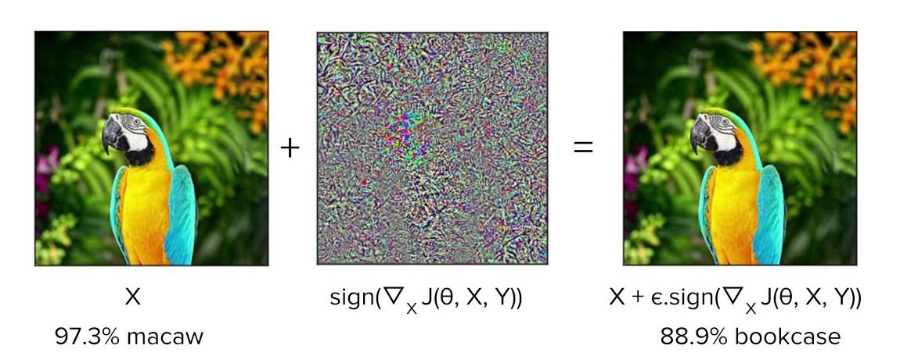
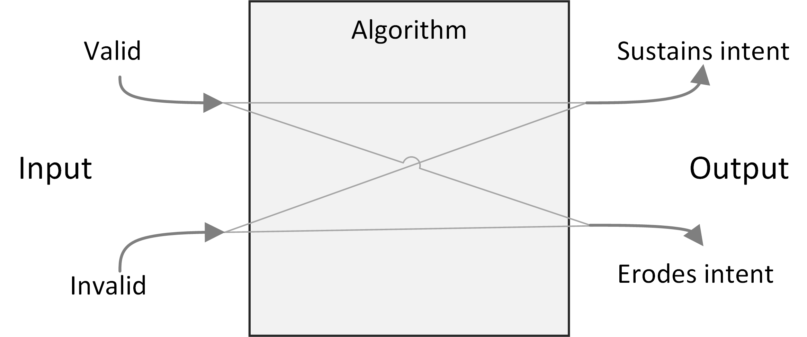

You can also read this essay as a PDF.
This essay is also posted at SSRN.
Performances and ethics
Individuals present themselves to the world in a set of performances, and tune their presentation depending on the setting.1 We may not believe there is a single “real” person behind these performances, but we do expect to see a “coherence among setting, appearance, and manner” (p.25). Individuals whose performances differ too much between one setting and another risk being called dishonest or two-faced.
1 Erving Goffman, The Presentation of Self in Everyday Life (Garden City, New York: Doubleday, 1959).
Since branding became important to companies, they too have presented themselves to the world in a set of performances. Financial incentives demand they tune their performance to the setting—offering a generous and humane face in their public communications and a harsher and less empathetic one when managing the bottom line—while the ethical demand for coherence remains. Two decades ago the movement against corporate-led globalization highlighted these presentation gaps, captured in the dissonance between Nike’s empowering “Just Do It” to those who bought their sneakers, and the far-from-empowering sweatshop conditions endured by those who made them.2 One legacy of that movement is a set of ethical consumption initiatives, in which independent fair trade and sustainability certifications provide an opportunity for companies to demonstrate a coherent set of values behind their performances.3
2 Naomi Klein, No Logo (Toronto: Knopf Canada, 2000).
3 Kimberley Ann Elliott and Richard B. Freeman, Can Labor Standards Improve Under Globalization? (Washington DC: Institute for International Economics, 2003).
Now, in the debates over AI ethics, it is technology companies who find themselves accused of being two-faced, of presenting themselves through their brands as value-driven organizations while deploying algorithms4 that are too often biased, opaque, and unfair.
4 In this chapter, algorithm is shorthand for any automated data-driven sorting systems, including classifying, scoring, rating, and ranking. Algorithms may be implemented by computers but may also be implemented through organizational policies and practices.
The debates have taken on new importance following the explosion of “deep learning” techniques.5 Private sector investment in what is now often broadly labelled “AI” is dominated by major internet platform companies such as Facebook, Amazon, Apple, Google, and Microsoft: while seven billion dollars have been invested in start-ups, these companies have invested four to five times that amount.6 Platform companies are also leaders in deploying deep learning algorithms: deployments in other industries are in their early stages, yet many of us encounter deep learning algorithms daily through Google search, Facebook News Feed,7 Apple Siri, Amazon Alexa, Uber pricing,8 Airbnb search,9 and more.10 If this chapter focuses on the major platform companies, it is because they are charting paths and setting precedents that more traditional industries will follow.
5 Alex Krizhevsky, Ilya Sutskever, and Geoffrey Hinton, “Imagenet Classification with Deep Convolutional Neural Networks,” in Advances in Neural Information Processing Systems, 2012, 1097–1105, https://papers.nips.cc/paper/4824-imagenet-classification-with-deep-convolutional-neural-networks.pdf.
6 McKinsey Global Institute, “Artificial Intelligence: The Next Digital Frontier?” (McKinsey & Company, June 2017), https://www.mckinsey.com/ /media/McKinsey/Industries/Advanced%20Electronics/Our%20Insights/How%20artificial%20intelligence%20can%20deliver%20real%20value%20to%20companies/MGI-Artificial-Intelligence-Discussion-paper.ashx.
7 K. Hazelwood et al., “Applied Machine Learning at Facebook: A Datacenter Infrastructure Perspective,” in /2018 IEEE International Symposium on High Performance Computer Architecture (HPCA)/, 2018, 620–29, https://doi.org/10.1109/HPCA.2018.00059.
8 Alexander Sergeev and Mike Del Balso, “Horovod: Fast and Easy Distributed Deep Learning in TensorFlow,” ArXiv:1802.05799 [Cs, Stat], February 15, 2018, http://arxiv.org/abs/1802.05799.
9 Malay Haldar et al., “Applying Deep Learning To Airbnb Search,” ArXiv:1810.09591 [Cs, Stat], October 22, 2018, http://arxiv.org/abs/1810.09591.
10 Nicola Jones, “Computer Science: The Learning Machines,” Nature News 505, no. 7482 (January 9, 2014): 146, https://doi.org/10.1038/505146a.
In response to a series of scandals and compelling arguments from critics and academics,11 the platform companies have recognized that they must establish reputations as responsible stewards of these powerful technologies if they are to avoid a costly backlash. They have issued public commitments to ethical AI, asserted their belief in fairness and transparency, and proclaimed their commitment to building diverse organizational cultures to prevent bias from creeping in to their technological services and products.12 They have set up ethics boards and industry organizations such as Partnership on AI,13 and participated in governmental bodies such as the EU’s High-Level Expert Group on Artificial Intelligence.14
11 Frank Pasquale, The Black Box Society: The Secret Algorithms That Control Money and Information (Cambridge: Harvard University Press, 2015); Cathy O’Neill, Weapons of Math Destruction: How Big Data Increases Inequality and Threatens Democracy (Crown Random House, 2016); Safiya Umoja Noble, Algorithms of Oppression: How Search Engines Reinforce Racism (New York University Press, 2018); Solon Barocas and Andrew Selbst, “Big Data’s Disparate Impact,” California Law Review 104 (2016): 671, https://dx.doi.org/10.2139/ssrn.2477899.
12 Google, “Our Principles,” Google AI, accessed February 1, 2019, https://ai.google/principles/; Microsoft, “Our Approach: Microsoft AI Principles,” Microsoft, accessed February 1, 2019, https://www.microsoft.com/en-us/ai/our-approach-to-ai.
13 The Partnership on AI, “The Partnership on AI,” The Partnership on AI, accessed February 1, 2019, https://www.partnershiponai.org/.
14 European Commission, “High-Level Expert Group on Artificial Intelligence,” 2018, https://ec.europa.eu/digital-single-market/en/high-level-expert-group-artificial-intelligence.
The platform companies have also taken on the task of designing fairness into their systems,15 investing in research into fairness and transparency in machine learning, articulating statistical criteria for fairness, designing mechanisms for explaining machine-learning results, assembling unbiased data sets for key problems, and more. The technical approach is a good fit: technical criteria play to the strengths of technology companies. Standards set public benchmarks and provide protection from future accusations. Auditable criteria incorporated into product development and release processes can confirm compliance.
15 Margaret Mitchell et al., “Model Cards for Model Reporting,” in Proceedings of the Conference on Fairness, Accountability, and Transparency, FAT* ’19 (New York, NY, USA: ACM, 2019), 220–229, https://doi.org/10.1145/3287560.3287596.
There are also financial incentives to adopt a technical approach: standards that demand expertise and investment create barriers to entry by smaller firms, just as risk management regulations create barriers to entry in the financial and healthcare industries.16
16 Malcolm Campbell-Verduyn, Marcel Goguen, and Tony Porter, “Big Data and Algorithmic Governance: The Case of Financial Practices,” New Political Economy 22, no. 2 (March 4, 2017): 219–36, https://doi.org/10.1080/13563467.2016.1216533.
The challenges of bias and fairness are far from solved, and critics continue to play an essential role. External investigations, audits and benchmarks reveal deficiencies missed by internal efforts.17 But auditable algorithms and data sets do promise mechanisms for closing the presentation gap between brand and algorithm.
17 Joy Buolamwini and Timnit Gebru, “Gender Shades: Intersectional Accuracy Disparities in Commercial Gender Classification,” n.d., 15; Inioluwa Deborah Raji and Joy Buolamwini, “Actionable Auditing: Investigating the Impact of Publicly Naming Biased Performance Results of Commercial AI Products,” n.d., 7.
Charges of bias and unfairness expose AI algorithms that are, in some sense, not good enough, and emphasize that the solution is better algorithms. But another set of problems may become more significant as algorithms become more accurate: when they become too good not to use. This chapter focuses on this second gap, which cannot be translated into research projects to be solved by computer scientists.
Algorithms create incentives
Much debate around AI ethics imagines an algorithm as a camera, recording and portraying some aspect of the external world. It asks: does the system portray the world fairly and faithfully? When it categorizes things, does it do so in a way that corresponds to the real world?18
18 Sam Corbett-Davies and Sharad Goel, “The Measure and Mismeasure of Fairness: A Critical Review of Fair Machine Learning,” ArXiv:1808.00023 [Cs], July 31, 2018, http://arxiv.org/abs/1808.00023; Alexandra Chouldechova, “Fair Prediction with Disparate Impact: A Study of Bias in Recidivism Prediction Instruments,” Big Data 5, no. 2 (June 2017): 153–63, https://doi.org/10.1089/big.2016.0047; Arvind Narayanan, Tutorial: 21 Fairness Definitions and Their Politics, accessed January 27, 2019, https://www.youtube.com/watch?v=jIXIuYdnyyk.
Social scientists have long known that algorithms do not just portray the world, they also change it. In the words of Donald MacKenzie, an algorithm is “an engine, not a camera”.19 Introducing a new algorithm means sorting people differently; if people care about how they are sorted, they respond.20
19 Donald MacKenzie, An Engine, not a Camera: How Financial Models Shape Markets (MIT Press, 2007).
20 Danielle Keats Citron and Frank A. Pasquale, “The Scored Society: Due Process for Automated Predictions,” SSRN Scholarly Paper (Rochester, NY: Social Science Research Network, 2014), https://papers.ssrn.com/abstract=2376209.
Once people respond, the dynamic between algorithms and their subjects becomes strategic: economists are familiar with such situations and developed the tools of game theory to think about them.
Sociologists have shown that responses to algorithms are ubiquitous and subtle. The most seemingly innocuous decisions prompt changes in what is being measured. In 1927 Dutch authorities separated the cause of death entered into statistical records from that recorded on the public death certificate, a change that was followed by “a considerable increase in Amsterdam of cases of death from syphilis, tabes, dementia paralytics, … and suicide.”21 Why? Because these causes of death could now be entered into the statistical record without adding to the pain of newly-bereaved relatives.
21 Geoffrey C. Bowker and Susan Leigh Star, Sorting Things Out: Classification and Its Consequences (The MIT Press, 1999). p 141
Sociologists have also shown how surprisingly powerful algorithmic engines can be. In their book Engines of Anxiety, Wendy Espeland and Michael Sauder describe the impact of US News and World Report rankings on US law schools.22 Employers use the rankings to identify good students, so students rely on them when choosing where to apply, so law schools who want the best students must play the game, and rankings end up dominating many aspects of law school life. The dynamic is described beautifully by Kieran Healy in a review of Espeland and Sauder’s book:
22 Wendy Nelson Espeland and Michael Sauder, Engines of Anxiety: Academic Rankings, Reputation, and Accountability (Russell Sage Foundation, 2016).
The academic legal establishment did not so much fall into this trap as become entangled in it. Like a fly touched by the thread of a spider’s web, they were at first only lightly caught up, but then found that each move they made in response only drew them in more tightly.23
23 Kieran Healy, “By the Numbers - Wendy Espeland and Michael Sauder, Engines of Anxiety: Academic Rankings, Reputation, and Accountability (New York, Russell Sage, 2016),” European Journal of Sociology / Archives Européennes de Sociologie 58, no. 3 (December 2017): 512–19, https://doi.org/10.1017/S0003975617000315.

This chapter draws loosely on social science perspectives to sketch what can happen when we respond to algorithms, and the consequences of our responses.
Imagine an algorithm that sorts individual subjects into categories. If subjects care about their assigned category, then they have an incentive to optimize how they present themselves: changing their inputs to achieve a better output. Their decision to invest in this presentation depends on three factors:
Presentation cost. The subject must be able to afford to change their presentation.
Sensitivity. Changing an input feature is worthwhile only if it affects the output.
Impact. Changing an output is worthwhile only if it has significant consequences.
Algorithms with high impact, high sensitivity, and low presentation costs give subjects strong incentives to change their presentation. Following the terminology of economics, we can loosely say that such algorithms have high elasticity. The data distributions on which elastic algorithms operate when deployed will differ from those on which it was trained. When data distributions change, accuracy is lost: elastic algorithms may also be fragile.
There are reasons to believe that machine learning systems, and specifically deep learning systems, may be particularly elastic and fragile, mapping on to each of the factors above.
First is the low cost of experimentation around presentation. Deep learning techniques called Generative Adversarial Networks (GANs)24 have become excellent at generating images or videos or text that look as if they were created by humans or depict “real world” artefacts. These uses have been grouped together under the name “deep fakes”.25
24 Ian Goodfellow et al., “Generative Adversarial Networks,” in Advances in Neural Information Processing Systems 27, ed. Z. Ghahramani et al. (Curran Associates, Inc., 2014), 2672–2680, http://papers.nips.cc/paper/5423-generative-adversarial-nets.pdf.
25 Robert Chesney and Danielle Keats Citron, “Deep Fakes: A Looming Challenge for Privacy, Democracy, and National Security,” SSRN Scholarly Paper (Rochester, NY: Social Science Research Network, July 14, 2018), https://papers.ssrn.com/abstract=3213954.
There is growing evidence that the remarkable accuracy of deep learning models may be accompanied by high sensitivity. In 2013 a phenomenon called “adversarial examples” was discovered: certain image perturbations, undetectable to the human eye, nevertheless caused deep learning algorithms to make obvious mistakes when classifying the image (as measured by human judgment).26 An example is given in Figure 2. The original examples were curiosities,27 but the more it has been studied, the more general the phenomenon appears to be.28 Fragility could be a general feature of deep learning models:29 they typically optimize millions of parameters, and the more parameters, the bigger the “attack surface” as each parameter provides a new opportunity for subjects to tweak.
26 Ian J. Goodfellow, Jonathon Shlens, and Christian Szegedy, “Explaining and Harnessing Adversarial Examples,” ArXiv:1412.6572 [Cs, Stat], December 19, 2014, http://arxiv.org/abs/1412.6572.
27 Christian Szegedy et al., “Intriguing Properties of Neural Networks,” ArXiv:1312.6199 [Cs], December 20, 2013, http://arxiv.org/abs/1312.6199.
28 Nicholas Carlini and David Wagner, “Audio Adversarial Examples: Targeted Attacks on Speech-to-Text,” ArXiv:1801.01944 [Cs], January 5, 2018, http://arxiv.org/abs/1801.01944.
29 Adi Shamir et al., “A Simple Explanation for the Existence of Adversarial Examples with Small Hamming Distance,” ArXiv:1901.10861 [Cs, Stat], January 30, 2019, http://arxiv.org/abs/1901.10861; Alexandru Constantin Serban and Erik Poll, “Adversarial Examples - A Complete Characterisation of the Phenomenon,” ArXiv:1810.01185 [Cs], October 2, 2018, http://arxiv.org/abs/1810.01185; Ali Shafahi et al., “Are Adversarial Examples Inevitable?,” September 27, 2018, https://openreview.net/forum?id=r1lWUoA9FQ; David Stutz, Matthias Hein, and Bernt Schiele, “Disentangling Adversarial Robustness and Generalization,” ArXiv:1812.00740 [Cs, Stat], December 3, 2018, http://arxiv.org/abs/1812.00740; Dimitris Tsipras et al., “Robustness May Be at Odds with Accuracy,” May 30, 2018, https://arxiv.org/abs/1805.12152v3.

Many machine learning systems have high impact because they are deployed at scale. We may not want to invest in optimizing our LinkedIn profile, but if we are seeking work and that’s where employers look we have little alternative but to put our best foot forward. Scale also creates market opportunities for cost-lowering intermediaries who can assist with optimization, as with search-engine optimization, reputation management or, come to that, tax accountancy. Scale makes algorithmic flaws matter more than those of any one human.
As deep learning drives the next generation of decision support systems and recommender systems, their elasticity and fragility may become increasingly important. To make matters more serious, these weaknesses will not show up in proofs of concept or early stage deployments, where the output has little impact on subjects. It is only when algorithms are operating at scale that the incentive to invest becomes large, making the system more fragile.

Incentives drive responses
Figure 3 classifies responses to algorithms. Algorithms require valid input if they are to give correct output. Algorithms also have an intent that can be affected positively or negatively by the actions of subjects. In general, the output is a proxy for this less well-defined intent.30 Each input arrow may be paired with each output arrow, giving four classes of response. While algorithm designers may prefer to permit only valid inputs which sustain the intent of the system, all four combinations can have ethical justifications.
30 Cathy O’Neill, Weapons of Math Destruction: How Big Data Increases Inequality and Threatens Democracy (Crown Random House, 2016).
Valid inputs can be understood by thinking about a simple rule-based system, such as a hiring filter that sorts applicants based solely on educational achievements. The input is a subject’s educational achievements: genuine achievements are valid and fake achievements are not. The intent of the system is to give the hiring manager a good set of interviewees: if he or she is happy with their applicants the system’s intent is satisfied.
In cases that economists describe as separating equilibria for signalling and screening games,31 valid inputs sustain the intent of the algorithm. If the applicant pool consists of two qualities from an employment perspective (high and low), and if getting a degree is easier for high quality people than for low quality people, then only high-quality people find it worth investing in a degree. The beauty of such an arrangement is that it is “incentive compatible”: an “invisible hand” guides subjects so that, if they respond to incentives, the algorithm continues to satisfy its intent without additional governance.
31 Michael A. Spence, “Job Market Signaling,” The Quarterly Journal of Economics 87, no. 3 (1973): 355–74; Joseph E. Stiglitz, Whither Socialism?, The Wicksell Lectures (Cambridge Massachusetts, London England: The MIT Press, 1994).
If it is equally costly for low quality applicants to obtain a degree as for high quality applicants, then the degree ceases to be a useful signal. Applicants may continue to invest in degrees, but the algorithm will no longer separate the wheat from the chaff. This is the game-theoretic case of a “pooling equilibrium”, where valid responses erode the intent of the algorithm. We know how the verb describing valid responses in pooling equilibria declines: I follow the letter of the law, you teach to the test, he or she games the system. The problems of pooling equilibria have been elevated to the status of a Law: “Goodhart’s Law” states that “When a measure becomes a target, it ceases to be a good measure” to which we might add a corollary that becomes important below: “When a measure is not a target, it ceases to be optimized”.
The ethics of optimizing responses using valid input is not simple. One reason Google keeps its search algorithms secret is to prevent gaming by the search-engine optimization industry,32 but when it comes to the tax system their attitude is different. A secret tax system would be unacceptable, of course. Accused of dodging taxes by moving $23bn to Bermuda, Google responded simply: “We pay all of the taxes due and comply with the tax laws in every country we operate in around the world”.33
32 Jonathan Rosenberg, “The Meaning of Open,” December 21, 2009, http://googleblog.blogspot.ca/2009/12/meaning-of-open.html.
33 Reuters, “Google Shifted $23bn to Tax Haven Bermuda in 2017, Filing Shows | Technology | The Guardian,” The Guardian, January 3, 2019, https://www.theguardian.com/technology/2019/jan/03/google-tax-haven-bermuda-netherlands.
Workarounds are a class of invalid inputs that nevertheless sustain the intent of the system. Legal scholar Jennifer Raso investigated the operation of Ontario Works, a welfare-eligibility decision system,34 and found that case workers became experts at working with the system, on occasions entering false data to coax results that line up with their professional judgment. Whether dealing with bugs in the program (an inapplicable field for some applicants would also be a required field in the system) or with weaknesses in the model, case workers break the letter of the law to follow the spirit. Similar behaviour has been seen among US doctors seeking to provide their patients with good outcomes from insurance systems.35
34 Jennifer Raso, “Displacement as Regulation: New Regulatory Technologies and Front-Line Decision-Making in Ontario Works,” Canadian Journal of Law & Society / La Revue Canadienne Droit et Société 32, no. 1 (April 2017): 75–95, https://doi.org/10.1017/cls.2017.6.
35 Matthew K. Wynia et al., “Physician Manipulation of Reimbursement Rules for Patients: Between a Rock and a Hard Place,” JAMA 283, no. 14 (April 12, 2000): 1858–65, https://doi.org/10.1001/jama.283.14.1858.
Any statistical algorithm has error cases, and many systems cannot function without workarounds from those it manages or their agents, which is why “work to rule” actions in some industrial settings are common: if you follow the letter of the law too strictly, nothing gets done. The unappreciated role of workarounds is one reason why James C. Scott argues that “certain schemes to improve the human condition have failed.”36 Scott is arguing against top-down “high-modernist” schemes, and algorithmic platforms certainly fall into this category.
36 James C. Scott, Seeing Like a State: How Certain Schemes to Improve the Human Condition Have Failed (Yale University Press, 1998).
The final case is invalid input that also erodes an algorithm’s intent, often described in security terms, as attacks on the algorithm. There are an increasing number of algorithms for which “opting out” is not an option, including ratings platforms. Botto Bistro is a San Francisco restaurant which was unhappy with what they saw as unethical treatment by Yelp, who also refused the restaurant’s request to be removed from the platform. In response, Botto Bistro encouraged its customers to enter over-the-top one-star reviews, seeking to achieve the lowest rating on Yelp. The campaign called attention to some dubious practices and contradictions in Yelp’s operations: perhaps a case of principled protest or subversive humour, sabotaging one system in pursuit of a higher goal.37
37 Tom Slee, “In Praise of Fake Reviews,” The New Inquiry, October 29, 2014, https://thenewinquiry.com/in-praise-of-fake-reviews/.
The more sophisticated and complex the algorithm, the more the lines between these four categories blur. Once algorithms move beyond simple inputs such as birth dates and educational qualifications, the criteria for distinguishing valid from invalid input become uncertain. Reputation systems such as Yelp, eBay, and Uber replace “true or false” criteria with more nebulous notions of “authenticity” or “honesty” and defend them not by appeals to correctness but to free speech.38. Who can say what a “four-star” rating really means?39
38 James Grimmelmann, “Three Theories of Copyright in Ratings,” Vanderbilt Journal of Entertainment and Technology Law 14, no. 4 (2012): 85–887.
39 Abbey Stemler, “Feedback Loop Failure: Implications for the Self-Regulation of the Sharing Economy,” SSRN Scholarly Paper (Rochester, NY: Social Science Research Network, April 1, 2016), https://papers.ssrn.com/abstract=2754768.
On the output side too, an unambiguous “ground truth” output is often unavailable outside the labelled training sets of the laboratory, so the distinction fades between an attack and a workaround. Even adversarial examples, which seem so obvious, have resisted definition. One technical attempt is to say they are input “that an attacker has intentionally designed to cause the model to make a mistake”40, but for an individual real-world case identifying “intent” or “mistake” may both be impossible, and so the classification of “attacker” fails too.
40 Justin Gilmer et al., “Motivating the Rules of the Game for Adversarial Example Research,” ArXiv:1807.06732 [Cs, Stat], July 17, 2018, http://arxiv.org/abs/1807.06732.
Responses demand guardrails
In general, algorithms that classify people are “incentive-incompatible”: if subjects follow their incentives then the algorithm ceases to function as designed. To sustain their accuracy, algorithms need external rules to limit permissible responses. These rules form a set of guardrails which implement value judgments, keeping algorithms functioning by constraining the actions of subjects.41
41 The metaphor adopts the designer’s point of view; from a subject’s point of view, “straitjacket” may be more appropriate.
“Move fast and break things” norms of disruptive innovation encourage algorithm designers to postpone thinking about guardrails. They may not be needed in low-elasticity environments such as proofs of concept or in early-stage deployments. Still, successful deployments at scale will require guardrails and so, even if problems of bias and fairness could be solved, the grail of algorithmic governance—of impartial and automatic algorithmic data-driven and evidence-based decision-making—would fall at this hurdle. Algorithms and their guardrails form an inseparable pair. Code is law, until it is not.
The existence of a scalable algorithm does not imply the existence of equally scalable guardrails: guardrails must deal with specific contexts and factors outside the original model, which only grow in number as algorithms draw on an ever-increasing volume and variety of data in pursuit of accuracy. Attempts to implement automated moderation have repeatedly failed, and companies have resorted instead to what Astra Taylor calls “fauxtomation”: behind the scenes real people do the work to simulate the effects of an algorithm, because the technology is not up to the task.42 The work of content moderators has been described recently by Sarah Roberts43 and Tarleton Gillespie.44
42 Astra Taylor, “The Automation Charade,” Logic Magazine, October 2, 2018, https://logicmag.io/05-the-automation-charade/.
43 Sarah Roberts, “Commercial Content Moderation: Digital Laborers’ Dirty Work,” in Intersectional Internet: Race, Sex, Class and Culture Online, ed. Safiya Umoja Noble and Brendesha M Tynes, Digital Formations Series (Peter Lang Publishing, Inc., 2016), https://intersectionalinternet.com/about/; Sarah T. Roberts, Behind the Screen: Content Moderation in the Shadows of Social Media (Yale University Press, 2019), https://yalebooks.yale.edu/book/9780300235883/behind-screen.
44 Tarleton GIllespie, /Custodians of the Internet: Platforms, Content Moderation, and the Hidden Decisions That Shape Social Media/ (Yale University Press, 2018), https://yalebooks.yale.edu/book/9780300173130/custodians-internet.
Algorithms without guardrails may become ungovernable. Social media recommender algorithms, for example, have all three qualities needed for high elasticity. Experimentation is affordable, content producers can discover the kind of content to which the recommendation algorithm is sensitive because they get fast feedback in the form of view counts, and the impact of the recommendation system is high. High elasticity means strong incentives to optimize individual outcomes.
The YouTube recommendation algorithm45 suffers from ungovernability. In a widely read article, James Bridle provided a tour through the long tail of bizarre content appearing on YouTube Kids as producers experiment to gain views.46 As just one example, they would rely on keyword/hashtag association when generating new content.
45 Paul Covington, Jay Adams, and Emre Sargin, “Deep Neural Networks for YouTube Recommendations,” in Proceedings of the 10th ACM Conference on Recommender Systems, RecSys ’16 (New York, NY, USA: ACM, 2016), 191–198, https://doi.org/10.1145/2959100.2959190.
46 James Bridle, “Something Is Wrong on the Internet,” James Bridle (blog), November 6, 2017, https://medium.com/@jamesbridle/something-is-wrong-on-the-internet-c39c471271d2.
When some trend, such as Surprise Egg videos, reaches critical mass, content producers pile onto it, creating thousands and thousands more of these videos in every possible iteration… branded content and nursery rhyme titles and “surprise egg” all stuffed into the same word salad to capture search results, sidebar placement, and “up next” autoplay rankings…
A striking example of the weirdness is the Finger Family videos… I have no idea where they came from or the origin of the children’s rhyme at the core of the trope, but there are at least 17 million versions of this currently on YouTube, and again they cover every possible genre, with billions and billions of aggregated views.
Ironically, it was Bridle’s essay going viral that made YouTube act, and they did so by invoking community guidelines. The response seems like an ethical platform making best efforts to implement guardrails that eject malicious actors, but the story is not so simple. One channel removed for violating the “family friendly” rule was that of Johnny Tanner.47 Tanner said he could not discover what had prompted the punishment, because he had no person to talk to. In defence of his channel, he said, “The algorithm is the thing we had a relationship with since the beginning. That’s what got us out there and popular… We learned to fuel it and do whatever it took to please the algorithm.”
47 Charlie Warzel, “YouTube Is Addressing Its Massive Child Exploitation Problem,” BuzzFeed News, November 22, 2017, https://www.buzzfeednews.com/article/charliewarzel/youtube-is-addressing-its-massive-child-exploitation-problem; Davey Alba, “YouTube Has A Massive Child Exploitation Problem. How Humans Train Its Search AI Is Partly Why.,” BuzzFeed News, December 28, 2017, https://www.buzzfeednews.com/article/daveyalba/youtube-search-rater-algorithms-children-disturbing-videos.
The same article quotes Davey Orgill, who left his job to make superhero parody videos, and whose channel reached two million viewers before being shut down. He argued that “the platform is responsible for encouraging… objectionable, sexual, and violent superhero content ostensibly oriented toward children… YouTube blames it on these people that were doing it, but for a year their algorithm pushed this content… People were doing it because it was creating millions and millions and millions of views. They created a monster.” The left hand of the recommendation algorithms promotes videos that the right hand of the Community Guidelines would later forbid.
Bridle ends his essay this way: “The architecture they have built to extract the maximum revenue from online video is being hacked by persons unknown to abuse children, perhaps not even deliberately, but at a massive scale,” but the disturbing videos are not “hacking” any more than minimizing tax payments is hacking, they are responses driven by the algorithm itself.
Facebook’s News Feed algorithm also suffers from high elasticity and its problems have also been framed as those of defence against malicious actors. Former Facebook executive Antonio Garcia Martinez complained on Twitter that “The same FB [Facebook] critics who call on the company to take on responsibility for moderating content (an operational job they (Facebook) don’t want, and had to be pressed to perform), will of course be shocked, shocked at the human cost in reviewing billions of pieces of random content”.48 But the requirement for guardrails .
48 Tweet since deleted.
The intent of News Feed has changed over time and remains operationally vague. Mark Zuckerberg announced in January 2018 that “I’m changing the goal I give our product teams from focusing on helping you find relevant content to helping you have more meaningful social interactions”.49 Facebook designed News Feed as a system with large rewards for high circulation, so encouraging participants to invest heavily in optimizing their outcomes. Attempting to move on from the resulting Clickbait headlines, Facebook has doubled down on building in-house algorithmic or fauxtomatic solutions.
49 Mark Zuckerberg, “One of Our Big Focus Areas for 2018,” Social Media, Mark Zuckerberg’s Facebook Posts (blog), January 11, 2018, https://www.facebook.com/zuck/posts/10104413015393571.
Facebook’s entire project, when it comes to news, rests on the assumption that people’s individual preferences ultimately coincide with the public good, and that if it doesn’t appear that way at first, you’re not delving deeply enough into the data.50
50 Farhad Manjoo, “Can Facebook Fix Its Own Worst Bug?,” The New York Times, April 25, 2017, sec. Magazine, https://www.nytimes.com/2017/04/25/magazine/can-facebook-fix-its-own-worst-bug.html.
The assumption fails. An elastic system based on “the data” causes the foundations on which it is built to shift. The incentive-incompatible News Feed algorithm demands guardrails to police the content it generates.
If Facebook does not want the job of managing news content, it could hand it to the news industry. Emily Bell of the Columbia Journalism School explains:
“At some point, if they really want to address this, they have to say, ‘This is good information’ and ‘This is bad information.’ They have to say, ‘These are the kinds of information sources that we want to privilege, and these others are not going to be banned from the platform, but they are not going to thrive.’ In other words, they have to create a hierarchy, and they’re going to have to decide how they’re going to transfer wealth into the publishing market.”51
51 Manjoo.
Facebook does want the job, or at least the money that comes with it. Financial incentives demand that Facebook keep responsibility for News Feed content, while insisting it has no accountability for the outcome beyond making best efforts.
Social media algorithms may be particularly prone to driving “gaming” behaviour, but others are not immune.
The Allegheny Family Screening Tool (AFST) is a decision support system used to predict child abuse or child neglect at the time of birth, and to alert child services to children who may be at risk. The attentions of child services can have a large effect on the lives of families whose risk score is high. Contact with social services is one factor that may lead to a high predictive score, so some families feel they must engage in self-harming behaviour, withdrawing from “networks that provide services, support, and community” to optimize their score. AFST might “create the very abuse it seeks to prevent.”52
52 Virginia Eubanks, Automating Inequality: How High-Tech Tools Profile, Police, and Punish the Poor (St. Martin’s Press, 2017), 169.
Facial recognition has long prompted civil liberties concerns.53 Guardrails are one of these concerns: is covering one’s face acceptable behaviour around facial recognition software in public spaces? In a trial deployment in London, police fined a man after he covered his face and objected to subsequent police questioning.54 More generally, as the data sources used by insurance companies, potential employers, and others expand, the potential for unusual or unorthodox behaviour patterns to trigger inferences, for example based on outlier detection algorithms, expands in tandem. Without protection against such inferences, the unusual becomes the suspicious.55 If the guardrail question: “what have you got to hide” becomes legitimate for authorities to ask, the technology will have altered public norms for the worse.
53 Lucas Introna and David Wood, “Picturing Algorithmic Surveillance: The Politics of Facial Recognition Systems,” Surveillance & Society 2, no. 2/3 (2004): 177–98, https://doi.org/10.1.1.117.7338&rep=rep1&type=pdf.
54 Lizzie Dearden, “Man Fined £90 after Covering Face during Facial Recognition Trial in London,” The Independent, January 31, 2019, https://www.independent.co.uk/news/uk/crime/facial-recognition-cameras-technology-london-trial-met-police-face-cover-man-fined-a8756936.html.
55 Sandra Wachter and Brent Mittelstadt, “A Right to Reasonable Inferences: Re-Thinking Data Protection Law in the Age of Big Data and AI,” SSRN Scholarly Paper (Rochester, NY: Social Science Research Network, September 13, 2018), https://papers.ssrn.com/abstract=3248829.
Autonomous vehicles will need new guardrails to manage pedestrian behaviour. At current levels of deployment, pedestrians will behave much as they do around cars with drivers, but if self-driving becomes commonplace then some may optimize their experience by stepping out ahead of autonomous cars, in full confidence that the car will stop. Should such pedestrian assertion become the norm, “autonomous vehicle adoption may be hampered by their strategic disadvantage that slows them down in urban traffic”.56 Perhaps, says Drive.ai board member Andrew Ng, “we should partner with the government to ask people to be lawful and considerate… Safety isn’t just about the quality of the AI technology.”57 We can expect the self-driving car industry to seek new guardrails that protect their own algorithms, yet discussion of these guardrails are largely missing from conversations about the ethics of autonomous vehicles.
56 Adam Millard-Ball, “Pedestrians, Autonomous Vehicles, and Cities,” Journal of Planning Education and Research 38, no. 1 (2018), https://journals.sagepub.com/doi/abs/10.1177/0739456X16675674.
57 Russell Brandom, “Self-Driving Cars Are Headed toward an AI Roadblock,” The Verge, July 3, 2018, https://www.theverge.com/2018/7/3/17530232/self-driving-ai-winter-full-autonomy-waymo-tesla-uber.
In short, guardrails limit the autonomy of algorithmic subjects. Algorithmic governance may encourage platforms to innovate with A/B testing on their subjects, but the subjects themselves are constrained. Some may be punished twice over: once by the algorithm for unorthodox behaviour that it does not properly model, and a second time if they fall foul of the guardrails while trying to avoid the first.
Guardrails create temptation
The algorithm-guardrail pairing creates temptations for platform owners to indulge in arbitrage: exploiting presentation gaps to circumvent regulation and to avoid brand damage. When algorithms encourage behaviour that the guardrails forbid, platform companies may choose whether to present themselves through their algorithm or through the values imposed by their guardrails. Ethics calls for a consistent presentation, but companies have a financial incentive to keep the gap wide, and many activities can be seen in this light.
One response is to frame problems in terms of the software development lifecycle. Problems are bugs, and the software industry knows how to deal with bugs: they are reported, they are fixed, and fixes are rolled out to customers. It is a statement of faith that bugs are temporary, and software improves through iterative refinement. If algorithmic failings are bugs, external authorities have neither the jurisdiction nor the expertise to fix them. But as we have seen, guardrail failures are features not bugs: they are created by the incentives built into the algorithm. In her book “Uberland”, Alex Rosenblat talks of Uber drivers seeing “phantom requests” that appear briefly on the driver app but vanish before they can respond.58 Phantom requests damage drivers’ prospects of earning bonuses that depend on maintaining a high acceptance rate. Uber’s response to driver complaints was to blame it on network problems and promise a fix. Without effective person-to-person driver support, Uber denies drivers the option of a workaround, while the language and practices of software development helps the company avoid what would, in other companies, be a breach of contract with their drivers.
58 Alex Rosenblat, Uberland: How Algorithms Are Rewriting the Rules of Work (University of California Press, 2018), https://www.ucpress.edu/book/9780520298576/uberland.
A second response is to invoke value-based guardrails in an ad-hoc manner. If algorithmic governance leads to behaviour on the part of subjects that may damage the brand, it is tempting to let it go until the prospect becomes too dangerous. YouTube’s actions around the YouTube Kids channel fall into this pattern.
Airbnb is an algorithmically-governed platform with a stated intent of the building a community of regular people who live in their own home and occasionally share it with strangers. Any guardrails to keep behaviour within this mandate runs the risk of affecting Airbnb’s earnings, and so there has been nothing in Airbnb’s systems to stop hosts creating multiple listings, setting up organizations with different “hosts” as fronts,59 or renting out listings for 365 nights a year. When the gap between algorithmic practices and stated aims became too large in New York City, bringing the threat of restrictions on Airbnb’s market, the company invoked guardrails to expel a thousand hosts off its platform,60 claiming that they were not providing the experience their community expected.61 Code was overruled by brand.
59 Luis Ferré-Sadurní, “Inside the Rise and Fall of a Multimillion-Dollar Airbnb Scheme,” The New York Times, February 23, 2019, sec. New York, https://www.nytimes.com/2019/02/23/nyregion/airbnb-nyc-law.html.
60 Murray Cox and Tom Slee, “How Airbnb Hid the Facts in New York City,” February 7, 2016, http://tomslee.net/how-airbnb-hid-the-facts-in-nyc.
61 Kristen V. Brown, “Airbnb Admits That It Purged 1,500 Unflattering New York Listings Right before Data Release,” Splinter, accessed March 30, 2019, https://splinternews.com/airbnb-admits-that-it-purged-1-500-unflattering-new-yor-1793854942.
A third temptation is to use the platform’s information resources to hide or muddy the waters regarding algorithmic failures. Ryan Calo and Alex Rosenblat have detailed the many ways in which Uber has used its information to shape the behaviour of its drivers.62 The selective and judicious release of data on an exclusive basis for collaboration with academics or industry experts may also serve to shape the overall perception of the company, whether individual papers are written independently or not.
62 Ryan Calo and Alex Rosenblat, “The Taking Economy: Uber, Information, and Power,” Columbia Law Review 117 (March 9, 2017), https://papers.ssrn.com/abstract=2929643.
Finally: companies that become embedded into the infrastructure of our lives have leverage when it comes to the presentation gap. Uber seeks to become a privately-owned part of city transit infrastructure and uses the data it has accumulated as a resource to be licensed back to the cities in which they operate. Once integrated, cities cannot easily walk away from the platform, problems on the platform become public concerns regarding malicious actors, and cities’ leverage regarding governance on the Uber platform is lost. Smart City initiatives such as the Toronto project led by Google subsidiary Sidewalk implicitly adopt this same approach.63
63 See the chapter by Ellen Goodman in this book.
Temptation needs policing
The more powerful algorithms have become, the more it is clear that market forces alone cannot solve the problems arising from the incompatible incentives.
Platform companies can sustain a gap between algorithm and guardrail in part because Section 230 of the CDA absolves them of much responsibility for the consequences of their governance failures, in the USA at least. Chesney and Citron’s recent paper on Deep Fakes64 identify the platform companies as the “least cost avoider”: the actor who is in the best position to fix problems of incompatible incentives. The previous section claimed that platforms currently have an incentive to take ownership of the problem, but not to fix it: that taking ownership is currently a way to ward off regulation. Revisiting Section 230 and its equivalents in other jurisdictions does the opposite.
64 Chesney and Citron, “Deep Fakes.”
One of society’s most serious classification problems is that of “innocent or guilty”, and it worth remembering that data-driven statistical methods are not permitted in this venue: evidence is instead strictly limited in scope. One reason is that people should not be punished for factors that, while they may correlate with criminality, lie outside their control. Another is that it would demand that people, especially members of less privileged groups, invest in optimizing their risk scores for fear of contact with the criminal system. “Evidence-based” statistical decision-making has become increasingly used in areas of the justice system such as parole and even sentencing and its use raises both problems. While the trend remains towards data-driven decisions, voices are being raised against use of actuarial risk assessment in the justice system. Restricting data use goes against the grain of the current drive to a data-driven society, but as the impact of algorithmic decisions grows, ideas from this venue where decisions matter the most may become more prominent in the years to come.
Competition rules provide another avenue to resolving incentive problems. Algorithmic ranking systems can become powerful institutions in and of themselves: part of the infrastructure of society. Advantages accrue to the company that owns the infrastructure when it is also competing in the market for services that exploit that infrastructure.65
65 Lina M Khan, “Amazon’s Antitrust Paradox,” The Yale Law Journal 126 (2017): 710– 805.
In some industries the essential infrastructure is heavily regulated and controlled, while services built on that infrastructure are opened for innovation. Airport infrastructure is separated from the operation of airlines. Core banking functions are strictly regulated – perhaps not as strictly as some would like – while many countries are experimenting with open banking laws to permit innovation on top of this infrastructure.
Outside the realm of regulation, we can look to alternative models. Wikipedia is the only non-profit in the top ranks of web sites, and it has been significantly less affected by the problems of incompatible incentives. Many, the present author included, thought that Wikipedia would be unable to maintain quality over nearly two decades, but it has proven sceptics wrong. Perhaps the anonymous nature of contributions removes many of the distorting incentives associated with self-promotion, perhaps it’s because Wikipedia is largely free of “viral” phenomena, but something is working on Wikipedia that is not working at YouTube, Facebook, or Amazon.
In conclusion, deep learning algorithms may be more intelligent than previous generations of machine learning, but they are not more robust. There may be a faint technical path forward for problems of bias and unfairness, but algorithms are engines, not cameras, and pervasive incompatible incentives will remain. Algorithms require guardrails, and technology companies are ill-suited and ill-positioned to design or implement these value-based rules. Guardrails become constraints on people’s behaviour and yet, in cases of high elasticity, effective governance may still be elusive. The pairing of the algorithm and guardrails tempts companies to engage in regulatory arbitrage, providing a requirement for external action.
Acknowledgements
I would like to thank the editors for their invitation and guidance, and the other contributors who took part in the Toronto workshop for their inspiration and expertise. I acknowledge helpful conversations with John Slee and Lynne Supeene.
Bibliography
Essential texts concerning the mechanisms and consequences of sorting.
Geoffrey C. Bowker and Susan Leigh Star, Sorting Things Out: Classification and Its Consequences (The MIT Press, 1999)
Wendy Nelson Espeland and Michael Sauder, Engines of Anxiety: Academic Rankings, Reputation, and Accountability (Russell Sage Foundation, 2016)
Bernard E. Harcourt, Against Prediction (University of Chicago Press, 2006)
Jane Jacobs, The Death and Life of Great American Cities (New York: Random House, 1961)
Donald MacKenzie, An Engine, Not a Camera: How Financial Models Shape Markets (MIT Press, 2007).
James C. Scott, Seeing Like a State: How Certain Schemes to Improve the Human Condition Have Failed (Yale University Press, 1998)
Thomas C. Schelling, Micromotives and Macrobehavior (W.W. Norton and Company, 1978)